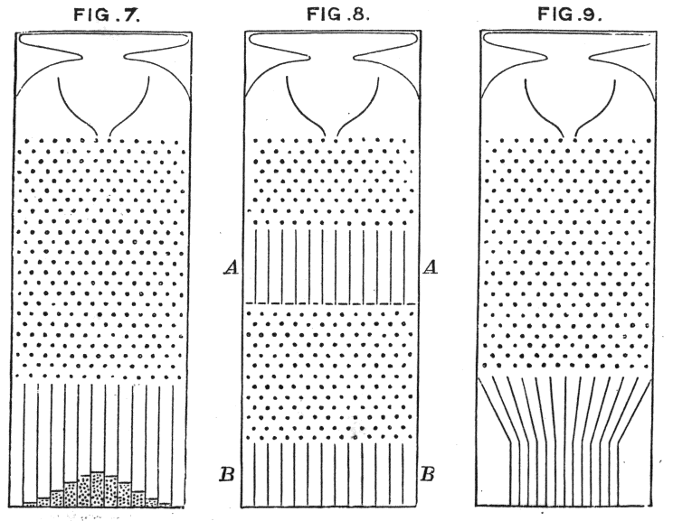

P(event) = number of favorable outcomes / total number of possible outcomes P(not A) = 1 − P(A) P(A or B) = P(A) + P(B) − P(A and B together) P(A and then B) = P(A) × P(B after A)
Those four lines are the heart of probability — the math of chance — and they are the stars of this lesson. The first one you may have seen before. The other three are where it gets interesting: they let you combine probabilities by adding, subtracting, and multiplying fractions. And in this honors edition, they do one more thing: they turn into EQUATIONS. A probability problem you can't solve forward, you solve backward — with x, with variables on both sides, with inequalities, with powers like (1/2)ⁿ, and even with one quadratic that peeks in at the end.
Why do people care? Because probability is everywhere: weather forecasts, board games, card games, video game drop rates, medical studies, sports predictions. And once you can combine probabilities, you can answer questions that sound impossibly hard — like "what's the chance of at least one six in four rolls?" or "is this carnival game rigged?" — in about ten seconds, and then PROVE your answer.
A fair warning: this lesson goes further than most first probability courses. You'll meet dependent events (drawing without putting it back), conditional probability, expected value, and functions like f(n) = 1 − (3/4)ⁿ. Hard just means "takes more than one step" — and we will take every single step together, with the reason for each.
In this lesson, you will:
- 1.Learn what probability is — the inequality 0 ≤ P(A) ≤ 1, and how to compare any two probabilities
- 2.Learn the probability formula — forward, and BACKWARD as an equation to solve
- 3.Learn to count every outcome — the counting principle, factorials, all 36 two-dice outcomes, and a deck of cards
- 4.Learn the "not" rule — and how complements turn into algebra like 3x + 5x = 1
- 5.Learn the "or" rule — the overlap trap, and how to solve backward for a missing piece
- 6.Learn the "and" rule — independent events, DEPENDENT events, and powers like (1/2)ⁿ
- 7.Learn what probability really means — expected counts, expected value, and the math of fair games
- 8.Learn the common mistakes so you never make them
- 9.Practice with 100 problems at the end — including design-your-own-game challenges with more than one right answer!
How to use this lesson: read the sections in order. Each section starts with the key idea you'll learn in it. Take your time, and try every "Your Turn" box with a pencil and paper. Show your steps, simplify every fraction, and never trust your first answer until you've checked it. Ready? Let's go!
📸 Pictures
A Galton board: each ball bounces left or right at random, yet together they pile up in a bell-shaped hill every time! See source ↓

Francis Galton's own 1889 drawing of his board, which he called a "quincunx". See source ↓
🗺️ Your lesson map
What Is Probability? 🧩Lesson 2
The Probability Formula — Forward AND Backward 🎯Lesson 3
Counting Every Outcome 🔍Lesson 4
The "Not" Rule — Complements, Algebra, and an Inequality ⚡Lesson 5
The "Or" Rule — Overlaps and Backward Detective Work 🌟Lesson 6
The "And" Rule — Independent, Dependent, and the Power of Powers 🛠️Lesson 7
What Probability Really Means — Expected Value ⚠️Lesson 8
Watch Out! Common Mistakes 🧠Lesson 9
Review — The Big Picture 🏋️Practice Problems
100 problems to try 🏆Quiz
Test yourself: new questions every time!
📚 Picture Sources
- Picture 1 · Galton box. By Estes Objethos Atelier (exhibit), photo by Rodrigo.Argenton. CC BY-SA 4.0. From Wikimedia Commons: https://commons.wikimedia.org/wiki/File:Galton_box.jpg
- Picture 2 · Quincunx (Galton Box) - Galton 1889 diagram. By Francis Galton. Public domain. From Wikimedia Commons: https://commons.wikimedia.org/wiki/File:Quincunx_(Galton_Box)_-_Galton_1889_diagram.png

_-_Galton_1889_diagram.png){kind=link}